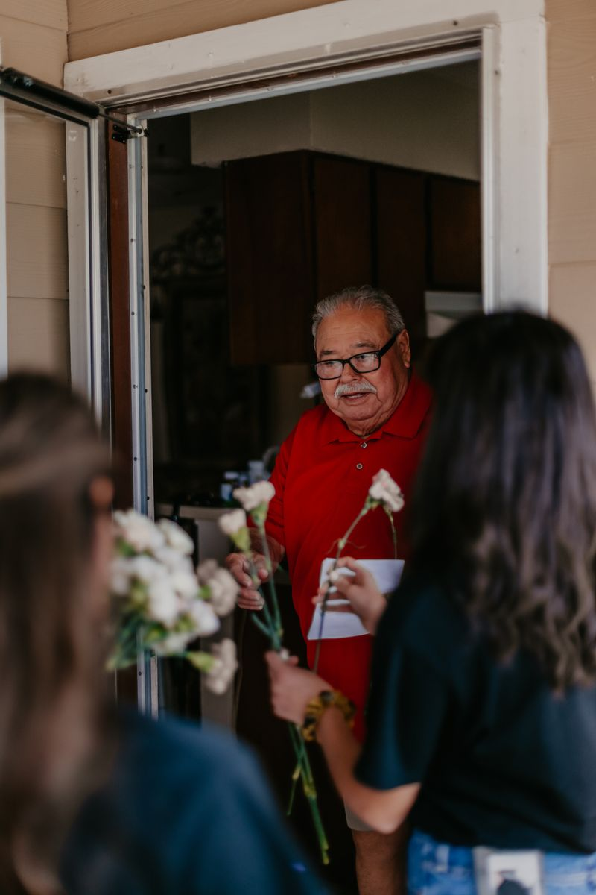
Home
Restore, Renew & Rebuild
Small repairs, painting, yard cleanups and accessibility fixes so low-income seniors can live safely and with dignity.
Learn more Serving the Lower Rio Grande Valley
Serving the Lower Rio Grande Valley
We serve our elderly with kindness and compassion: restoring homes, visiting the lonely, and reminding every senior they are seen, loved and never forgotten.
One neighbor, one heart,one home at a time.Made possible by neighbors like these
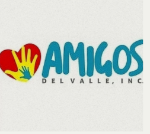
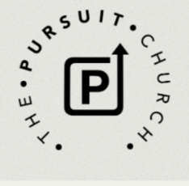
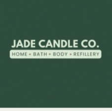
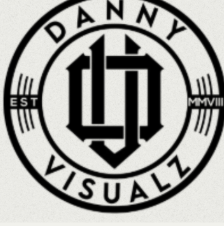
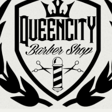
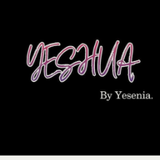
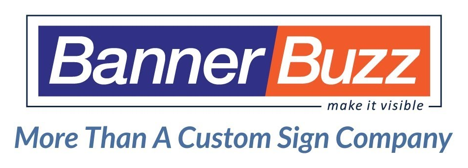
We're a faith-based non-profit that brings volunteers, churches and local businesses together to meet the real needs of seniors in the Rio Grande Valley. Through service projects, fellowship and outreach, we restore dignity, strengthen relationships and inspire hope.
Each program is rooted in faith, compassion and community, and each one needs neighbors like you.

Small repairs, painting, yard cleanups and accessibility fixes so low-income seniors can live safely and with dignity.
Learn more
Volunteers are matched with a senior for letters, calls, coffee and care packages, so no one feels forgotten.
Learn more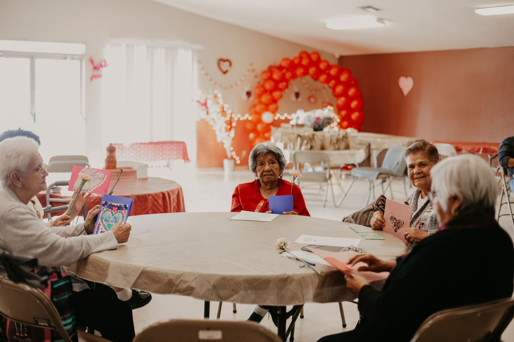
Crafts, music, prayer and conversation with seniors in adult day cares, nursing homes and hospice centers.
Learn more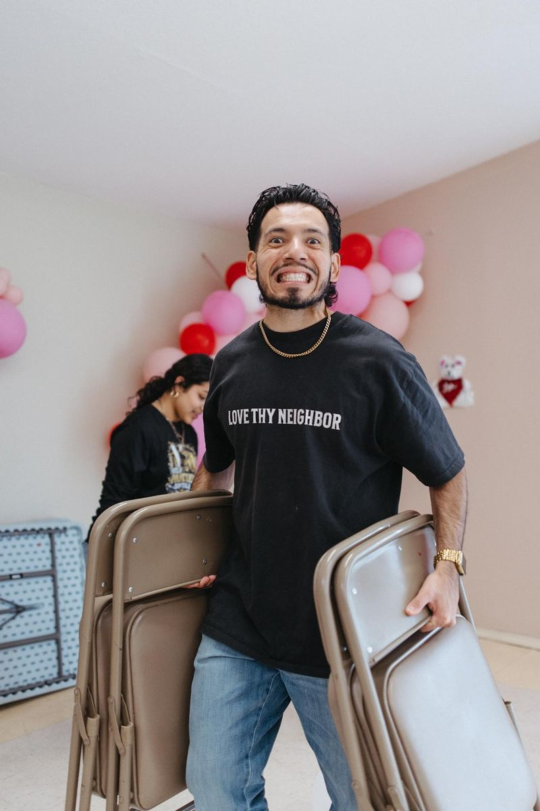
From repairing homes and visiting isolated seniors to running our GoodWorks resale booth and supporting community events, there's a place for you.
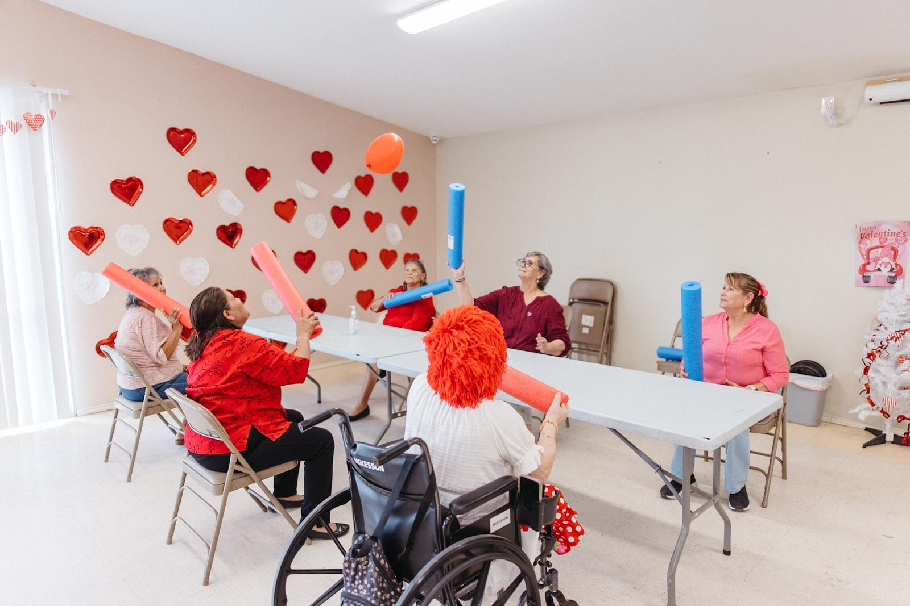
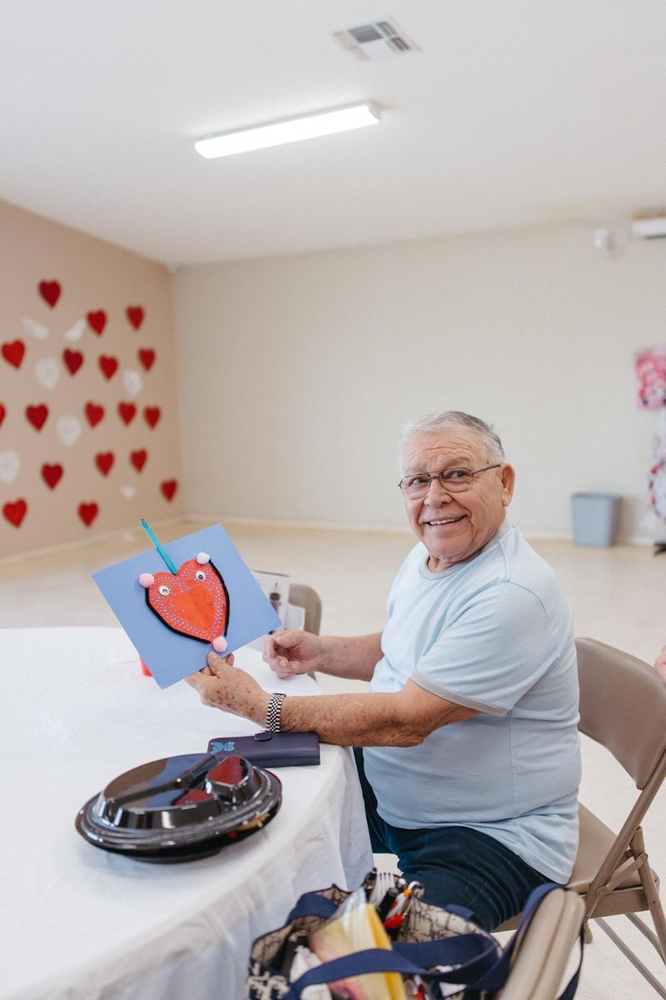
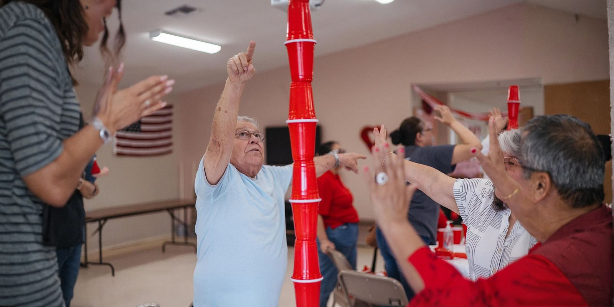
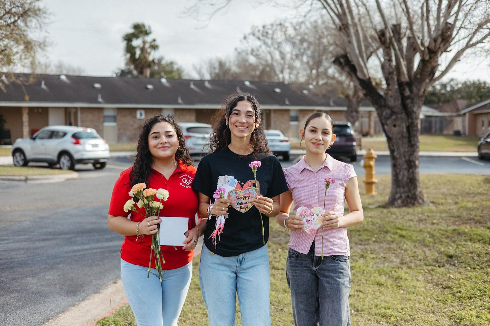
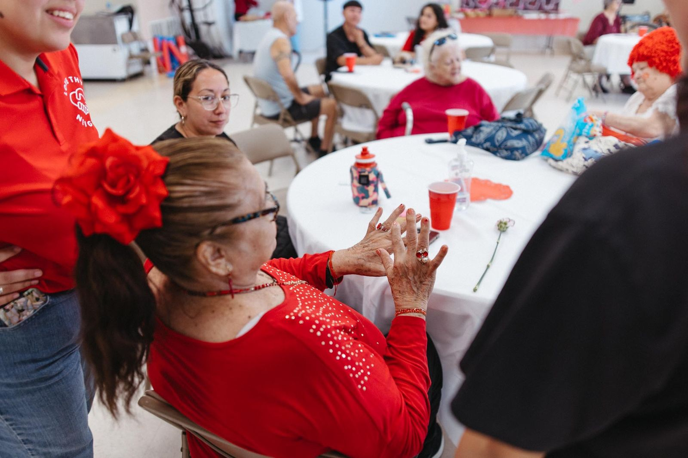

“Every project we complete is more than maintenance. It’s ministry in motion, restoring dignity and hope.”
Love Thy Neighbor
Whether it's a home repair, companionship, prayer visits or everyday help, tell us about them. Our outreach team reviews every referral and reaches out with care. All information is kept confidential.
Lasting impact happens when the community comes together. Sponsor a home project, donate supplies or host a fellowship event.
Shop our wish lists for tools, craft supplies and care-package items, and every purchase goes straight to work for a senior in the Valley.